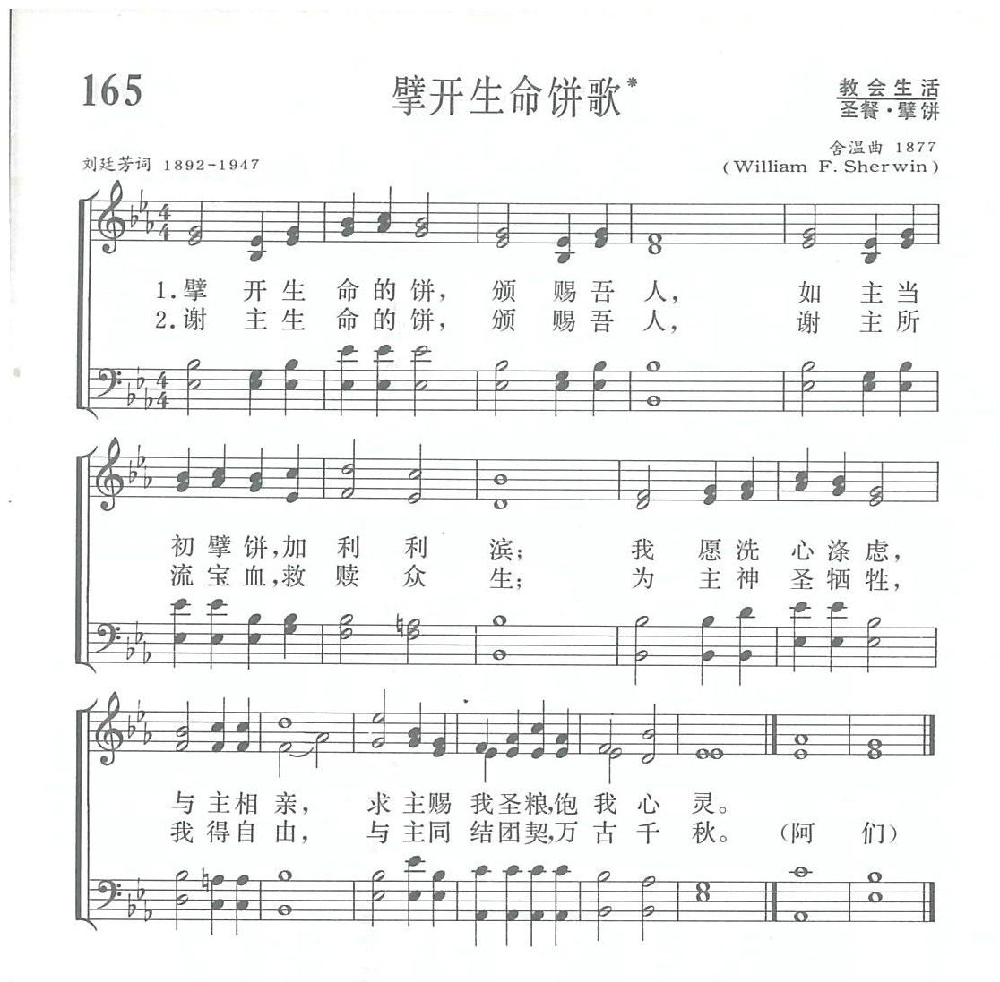

|
|
讚美詩(新編) |
|
|
|
|
https://www.zanmeishige.com/tab/13838.html?songbook=1&index=165
 |
|
|
|
|

https://youtu.be/sf6VD1qxt7k
第165首 擘开生命饼歌* _刘廷芳 O break the living bread
经文：“耶稣拿着这五个饼，两条鱼，望着天祝福，擘开饼，迸给门徒，摆在众人面前，……他们都吃，并且吃饱了”(可6：41—42)。
1934年《普天颂赞》在编辑过程中，刘廷芳博士在翻译了美国拉思伯里(事略参阅第154首)所写的《永生之言歌》后,按该诗的格律另写了一首圣诗。现先介绍作者刘廷芳的生平事略，然后再比较两诗的内容。
刘廷芳(英文名作Timothy Ting—fang Liu，1892-1947)生于浙江温州，于上海圣约翰大学毕业后留学美国，在纽约哥伦比亚大学得硕士学位，又在雅礼大学得神学学士学位，是纽约协和神学院研究生。192O年回国，在北京师范大学、燕京大学任教，并接受牧师圣职，同时任《真理与生命》、《紫晶》杂志编辑，从事写诗著文工作。1926-1928年再度赴美，在美国几个大学和中学讲学。奥柏林大学赠送他荣誉神学博士学位。l932年起，任《普天颂赞》编辑委员会主席，兼文字支委员会主席。经他修订的翻译圣诗多达一百九十余首。另有他的创作圣诗六首。这首《擘开生命饼歌》和第37O首《新天新地歌》都是他的创作新诗。
刘廷芳曾多次代表我国教会出席国际的基督教会议。他在燕京大学任教时期，十分同情、支持当时的学生爱国运动。1941年应美国新墨西哥大学之聘前往美国任教，并在各地讲学，1947年卒于新墨西哥城的阿尔伯克基城。
现在再将刘廷芳的诗与拉思伯里的诗并列如下作个比较：
《擘开生命饼歌》 《生命之饼》或《永生之言歌》
一、擘开生命的饼， 一、擘开生命的饼，
颁赐吾人， 充我灵饥，
如主当初擘饼， 正如海畔当年，
加利利滨； 引众归依；
我愿洗心涤虑， 我愿努力穷尽，
与主相亲， 来覲圣颜；
求主赐我圣粮， 寸心迫切思慕，
饱我心灵。 生命之言。
二、谢主生命之饼， 二、昭示永生真理，
颁赐吾人， 使我遵循，
谢主所流宝血， 正如当年祝饼，
救赎众生； 加利利滨；
为主神圣牺牲， 从兹锁链脱身，
我得自由， 束缚无存，
与主同结团契， 真理赐我自由，
万古千秋。 安乐永�琚C
《普天颂赞》(旧版)第196首 《普天颂赞》(旧版)第177首
以上两首诗虽然都提到“擘开生命之饼”，但其主题完全不同，刘诗指的是圣餐，拉氏指的却是圣言(圣经)。拉氏的诗原是为美国纽约州桥头洼集会所开办的高级研究班的班歌。由舍温(事略参阅第154首)作曲。 《普天颂赞》将原来的诗曲配合在一起，而《新编》则采用舍温这曲配到刘廷芳的诗。
刘廷芳很重视圣餐典礼，在《普天颂赞》内还有一首《觐圣歌》(《普天颂赞》(旧版)197首)，歌词如下：
一、救世之身，为众生擘开，在骷髅地，痛饮苦杯；
蒙恩信众，奉命常纪念，敬设圣筵，追忆当年。
二、吾众今朝，虔诚来入覲，国难民愁，遍心创痕，
仰瞻圣容，看血泪千行，人间苦痛，主仍担当。
三、恳求临格，在我们中间，开我心目，昭现妙身；
以马内利，天福永无边，与主合一，同享永生。
该诗出版后由前来华英国行道会(见第160首注①)传教士铁逊坚(Taylor)译为英文，于1951年被英国广播公司和苏格兰教会的圣诗集收入，是为国人创作圣诗被外国圣诗采入的第一声。以后又于1964年被选人美国卫理公会赞美诗，配上前燕京大学音乐系毕业生、范天祥(事略参阅第31首)的高足苏引兰(1915-1937)的曲，调名为《圣恩调》，抄录于下：
《新编》中第199首的《清心调》也是苏引兰所谱的。